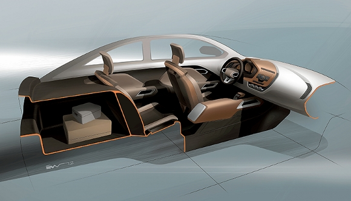
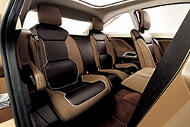
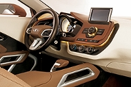
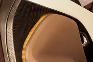
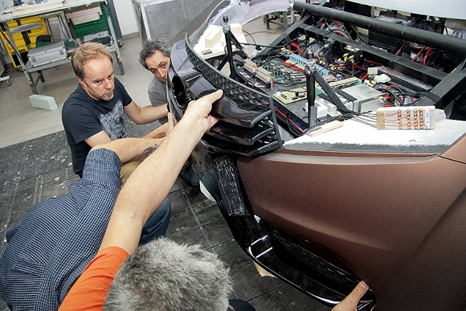
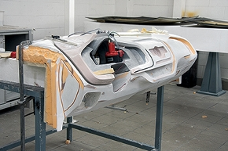
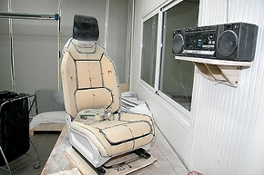

XRAY —Рентгеновский луч надежды
 По этому эскизу видно, что XRAY сохранил скромные размеры салона автомобиля В-класса: расстояние от спинки переднего кресла до спинки заднего — около 600 мм
Как устроен XRAY, я видел собственными глазами. У него работает вся светотехника, открываются и закрываются двери, детально проработан интерьер, включая выдвижной экран и механизмы складывания сидений. Впрочем, никакой реальной техники внутри пока нет. Лада может передвигаться своим ходом, у нее есть действующее рулевое управление и тормоза, но подвески нет, а вместо двигателя внутреннего сгорания под капотом — электромотор и восемь обычных свинцово-кислотных аккумуляторов. Скорость — около 8 км/ч, только чтобы самостоятельно въехать в выставочный зал.
Однако это не значит, что XRAY проектировался «от фонаря» — за основу для компоновки, включая расположение органов управления и сидений, была взята посадочная модель Приоры нового поколения. В длину концепт-кар — почти как нынешняя Приора-хэтчбек: около 4200 мм. Но колесная база чуть больше — примерно 2600 мм, ее специально растянули под огромные выставочные колеса.
   В салоне тоже «город контрастов». Но есть и вторая «философская» идея — многослойность: «бутерброд» из отдельных пластов передней панели. На всю салонную фурнитуру нанесена декоративная маркировка, но в том, как выглядят вращающиеся ручки, кнопочки и подрулевые переключатели, нет ничего концептуального — запомним их вид
Еще один привет из вазовского музея — перфорированная отделка дверных панелей. Маттин рассказывал, что увидел такую на Жигулях с потолком «в дырочку»
А концепция развития АвтоВАЗа гласит, что новая Приора появится в 2015 году, причем одновременно на ее платформе будет создан и кроссовер под кодовым названием B-Cross. Вот и вспомним тогда XRAY.
Вспомним контроллер на центральной консоли, обещающий появление на ВАЗах мультимедийных систем вроде «ай-драйва» с выдвижным дисплеем, вспомним и монументальный селектор «автомата» (внедрение автоматических трансмиссий распространится на весь модельный ряд). Но все это — «общие места». На что действительно стоит обратить внимание, так это на контрастную цветовую палитру, эргономику рабочего места водителя и оформление панели приборов с накладкой, парящей над основным телом «торпедо». Все это наработки для интерьеров будущих серийных машин.
А вот почему у «народной» Лады полностью кожаный салон? Это уже отдельная история.
 «Имплантация лица». Признаков отторжения вроде бы нет. Следом на машину поставят фары и капот: и уже никто не увидит, что вместо бензинового двигателя под ним — россыпь электронных блоков, которые управляют электромотором и всей концептуальной иллюминацией Лады
  Пока передняя панель еще не затянута в кожу, видны «уголок» из фанеры в основании и вырезанный по математической модели монолит из модельного пластика со вставленными в него отдельными деталями приборной доски. В процессе работы форму корректируют с помощью специальной модельной «шпаклевки» и «наждачки»
Кресла сделаны по похожему рецепту: каркас и салазки — реальные, а сверху — пластик, поролон и кожа